-
intro{{introExpanded ? 'remove' : 'add'}}The Nashville Number System (NNS) is a method of transcribing music that uses numbers to denote the seven scale degrees of a major scale. The system has many benefits including:
- Musicians with basic music theory knowledge can easily transpose a song into any key.
- Band leaders can effectively communicate chords and progressions for their band to play.
- Vocalists can indicate what they would like their bands to play.
- Nashville Number charts can easily be sight read.
-
the basics{{theBasicsExpanded ? 'remove' : 'add'}}notesConsider the C Major scale: C D E F G A B (C). Since this is the C Major scale we call C the "root". There are seven scale degrees of the major scale before reaching the octave of the root (shown in parentheses). NNS maps each of these scale degrees to a number like such:For example, if the lead line of song was "4 5 3 1" this would be played in the key of C as "F G E C". In this case, selecting an octave to voice the notes would be up to the musician's discretion.chordsThe numbers also apply to the basic chords of a key. Continuing with our C Major example:In this way we can use numbers to represent the chord with its root on a particular scale degree in the desired key. For instance, to play the 4 chord in the key of C, one would play the chord that starts on the 4 note of the C Major scale (F) resulting in an F Major chord. Note in the table above a minus sign (-) next to the chord indicates a minor chord.inversionsNNS can also be used to denote inversions of a chord. The following chart contains the 7 most common chords used in a huge variety of modern Pop, Country, and Rock music.The slash (/) denotes a chord inversion. The number under the slash indicates the bass voicing. In the table above there are two inversions.The first is the 1/3 chord. This is a 1 chord with a bass voicing of 3. In the key of C that equates to a C Major chord with an E note as the root. On the bass guitar, only an 3 (E) note would be played for this inversion.The same principle is applied to the 5/7 chord. In C this is G Major with a B root or bass voicing. Bass guitar only plays the 7 (B) note.any keyAll of the above concepts are applied to any musical key. This is what makes NNS such a great tool for transposing music. The numbers are applied to the scale degrees of any major key in exactly the same way.In this way an NNS chart can easily be read as long as the key is stated.
-
charts{{chartsExpanded ? 'remove' : 'add'}}symbolsThe following is a list of common symbols that appear on NNS charts.exampleThe following is an example of a hand-written NNS chart.
 The chart is broken down in the different sections of the song. Each section has a note about the dynamics for that part. For example, the verse of this song is played lightly by keys and acoustic guitar with the full band coming in at the chorus. See below for further discussion of each section.HeadingThe heading includes the title, original key, tempo, and time signature for the song.VerseEach "column" on the chart represents one bar or measure of music. Since this example song is in 4/4 that means each measure is 4 beats.The end of the first and third line contain a "split bar" indicating that the measure is divided into two beats of 6- and two beats of 1/3. Sometimes, split bars are marked with the number of beats in the measure to assign each chord. If not otherwise noted, assume the bar is split evenly between chords.The very last bar of the verse has a diamond symbol indicating the chord is to be played and let ring. A band director may say, "Diamond the 1," to indicate this to a band.ChorusIn addition to the "Band In" note at the top of the section, the chorus also contains another dynamic symbol. The "<" indicates a crescendo, or increase in volume. The symbol is elongated to show this build should take place over two measures. Similarly, a ">" symbol would indicate a decrescendo, or reduction in volume.Lead LickThis section specifies a melody line or lick of notes that is to be played over the section following.BridgeThe bridge contains two identical lines of music surrounded by brackets. At the bottom right of the brackets there is an "x2" indicating the section within the brackets is to be played twice. This technique is often used in order to avoid rewriting repetitious lines of music.RepeatsAfter the bridge there is a stand-alone tag for the chorus followed by one for the bridge. This indicates the musician should go back to play the full chorus section followed by a full bridge section. Again, a chart may be written this way to conserve space.OutroFinally, the diamond 4 at the bottom of the chart indicates that the song will end on a ringing 4 chord. The trailing symbol after the diamond 4 indicates a "wash" or an indefinitely prolonged, high-energy sounding of the chord without specific rhythm.
The chart is broken down in the different sections of the song. Each section has a note about the dynamics for that part. For example, the verse of this song is played lightly by keys and acoustic guitar with the full band coming in at the chorus. See below for further discussion of each section.HeadingThe heading includes the title, original key, tempo, and time signature for the song.VerseEach "column" on the chart represents one bar or measure of music. Since this example song is in 4/4 that means each measure is 4 beats.The end of the first and third line contain a "split bar" indicating that the measure is divided into two beats of 6- and two beats of 1/3. Sometimes, split bars are marked with the number of beats in the measure to assign each chord. If not otherwise noted, assume the bar is split evenly between chords.The very last bar of the verse has a diamond symbol indicating the chord is to be played and let ring. A band director may say, "Diamond the 1," to indicate this to a band.ChorusIn addition to the "Band In" note at the top of the section, the chorus also contains another dynamic symbol. The "<" indicates a crescendo, or increase in volume. The symbol is elongated to show this build should take place over two measures. Similarly, a ">" symbol would indicate a decrescendo, or reduction in volume.Lead LickThis section specifies a melody line or lick of notes that is to be played over the section following.BridgeThe bridge contains two identical lines of music surrounded by brackets. At the bottom right of the brackets there is an "x2" indicating the section within the brackets is to be played twice. This technique is often used in order to avoid rewriting repetitious lines of music.RepeatsAfter the bridge there is a stand-alone tag for the chorus followed by one for the bridge. This indicates the musician should go back to play the full chorus section followed by a full bridge section. Again, a chart may be written this way to conserve space.OutroFinally, the diamond 4 at the bottom of the chart indicates that the song will end on a ringing 4 chord. The trailing symbol after the diamond 4 indicates a "wash" or an indefinitely prolonged, high-energy sounding of the chord without specific rhythm.